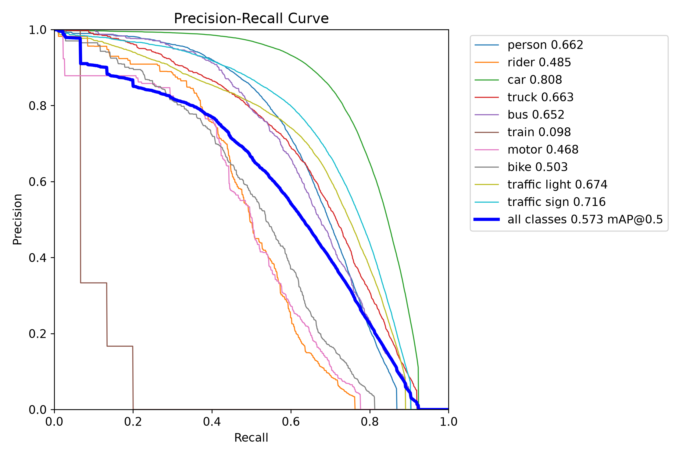
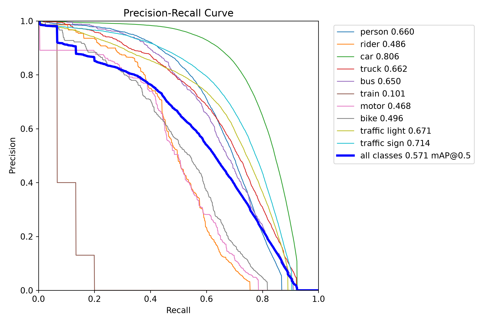
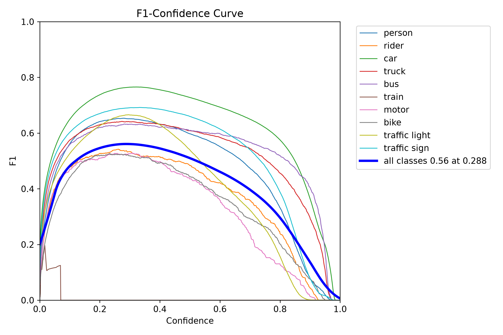
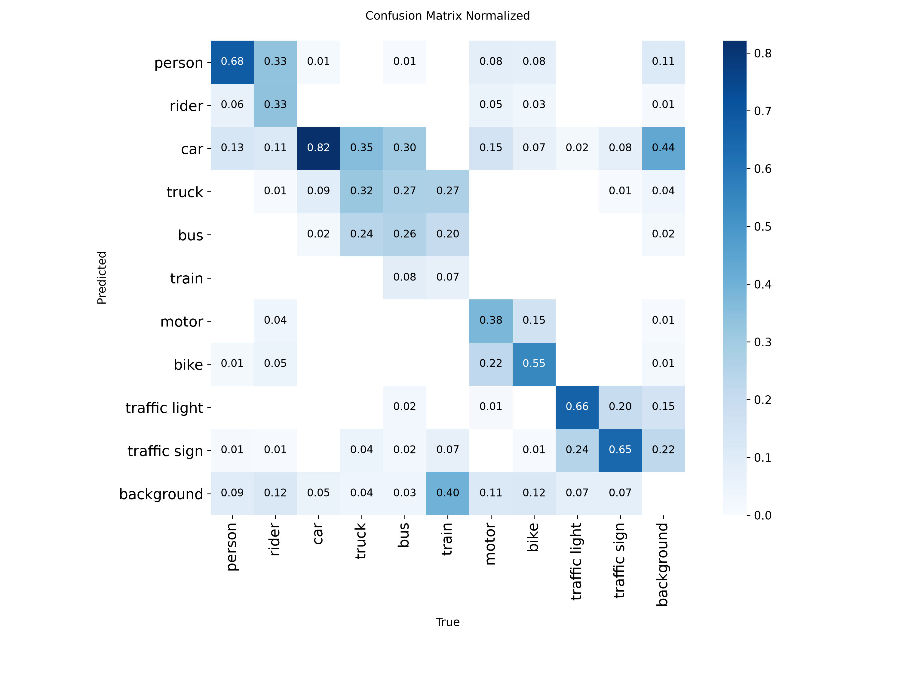

Tác Vụ Tiền Gán Nhãn Tự Động (Auto Pre-Labeling)
Xuất trực tiếp kết quả suy luận của mô hình nén ra định dạng nhãn chuẩn BDD100K hoặc YOLO để nạp vào CVAT, Label Studio. Cần người kiểm tra nhãn trước khi sử dụng.
ONNX Runtime Web & WebGPU
Benchmark ngay trên máy của bạn · CPU trình duyệt hoặc GPU qua WebGPU · 640×640 · p50 / p95 / FPS.
Đang đọc phần cứng…
ONNX Runtime Web chạy model ONNX ngay trong trình duyệt: WASM dùng CPU, WebGPU dùng GPU của máy mở trang. Hai chế độ này không gửi ảnh đến API suy luận Python. Chỉ bấm Chạy benchmark mới bắt đầu đo. Các runtime backend nằm trong nhóm nâng cao.
Precision: FP32 · FP16 · INT8.
Chưa có kết quả.
Phạm vi thời gian: tiền xử lý + truyền dữ liệu + suy luận + hậu xử lý; không gồm gửi HTTP, giải mã ảnh, tải model và warmup. FPS = 1000 / thời gian trung bình. Đây là microbenchmark một ảnh, không phải mAP hay throughput theo batch. Browser dùng Canvas, backend dùng OpenCV nên có thể khác nhẹ kết quả phát hiện. INT8 dùng graph PTQ/QAT có sẵn; TensorRT FP16 cho phép một số lớp giữ FP32.
| Model / ảnh | Runtime / thiết bị | Precision | Luồng CPU | p50 | p95 | FPS | Hộp | Lượt |
|---|---|---|---|---|---|---|---|---|
| Bấm Chạy benchmark để đo cấu hình đã chọn. | ||||||||
Thông số và nguồn gốc phép đo gần nhất
Chưa đo.
Bảng So Sánh Benchmark Tái Lập (6 Cấu Hình)
| Họ & Mô hình | Loại | Độ phân giải | Dung lượng (MiB) | mAP@50–95 | Suy giảm (Δ pp) | mAP@50 | Precision | Recall | F1-Score | Latency (ms) | Tốc độ (FPS) | Tăng tốc vs YOLO26m 640 |
|---|
Phân Tích Chuyên Sâu: PTQ vs QAT Trên YOLO26m
YOLO26m PTQ INT8 (Đối chứng)
Ứng Viên Cần Kiểm Chứng- mAP@50–95 INT8: 32.76%; chờ accuracy baseline FP16 để tính Δ pp.
- mAP@50: 57.13% — Kết quả INT8 trên validation.
- Precision tại max-F1: 73.69% — Đo trên tập validation; không phải precision tại ngưỡng confidence của demo.
- Đang tải latency đo lại theo cùng cấu hình CPU.
- Thời gian đóng gói: Nhanh chóng qua OpenVINO NNCF, không cần huấn luyện lại nặng nề.
YOLO26m QAT INT8 (Đối chứng)
Phương Án Nghiên Cứu- mAP@50–95 INT8: 31.45%; chờ accuracy baseline FP16 để tính Δ pp.
- mAP@50: 55.49% — Kết quả INT8 trên validation.
- Precision: 63.32% — Thấp hơn PTQ (73.69%) tại điểm max-F1; chưa có đánh giá riêng vật thể nhỏ.
- Recall: 51.72% — Cao hơn nhẹ (+0.73 pp), bù đắp cho việc phát hiện nhiều ứng viên box hơn.
- Đang tải latency đo lại theo cùng cấu hình CPU.
Biểu Đồ Kiểm Toán & Bằng Chứng Thực Nghiệm



